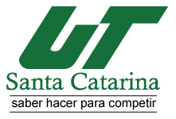

La Universidad Tecnológica Santa Catarina nació en 1998 con la vocación de proporcionar a sus estudiantes una preparación profesional como Técnico Superior Universitario (TSU), particularmente en las áreas demandadas por las industrias cercanas a nuestras instalaciones. Durante estos años, además, ha ampliado sus planes de estudio hasta el grado de Ingeniería como una continuación de las carreras de TSU que forman su oferta educativa. Se ha consolidado adicionalmente como una de las primeras instituciones capaces de ofrecer un Modelo de Inclusión Educativa y Laboral para Personas con Discapacidad en América. Por todo lo anterior, me siento muy honrada en dirigir esta comunidad universitaria y dar a todos ustedes la bienvenida a nuestra casa de estudios, estaremos todos en la mejor disposición de apoyarlos para que lleguen a feliz término en su formación profesional y posterior inserción en el mercado laboral. ¡Mucho éxito!